Posiadamy wieloletnie doœwiadczenie w budowaniu maszyn z u¿yciem nastêpuj¹cych technologii:
Technika monta¿u manualnego i automatycznego

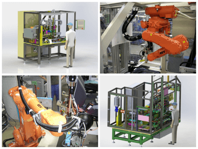
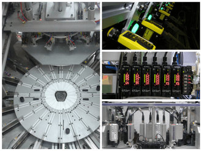
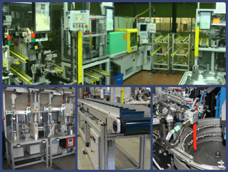
Sto³y Obrotowe / Indeksery
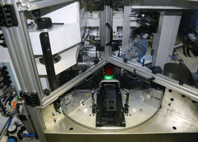
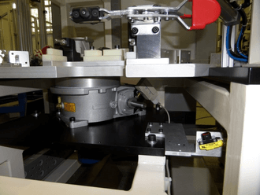
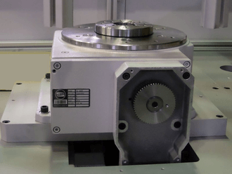
Roboty Przemys³owe i przenoœniki „Pick&Place”
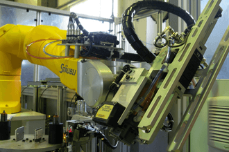
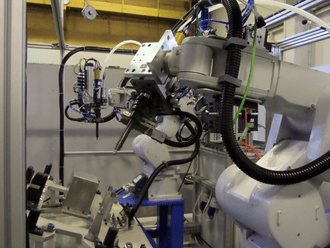

Prasy i Technika nitowania
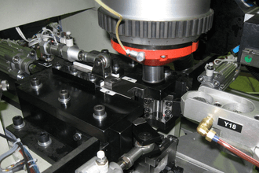
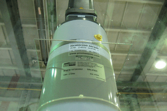
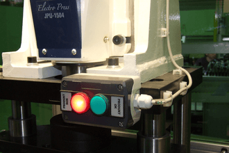
Transport, Conveyer-y i „Walkig Beam”
Spawanie, zgrzewanie oporowe i ultradŸwiêkowe
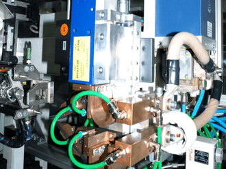
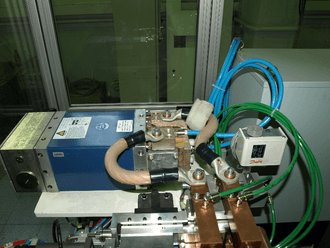
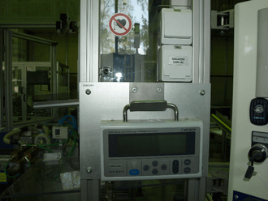
Lutowanie
Znakowanie udarowe, atramentowe i laserowe
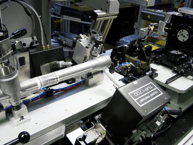
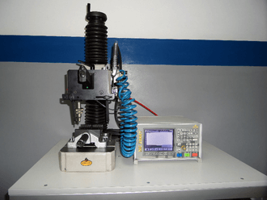
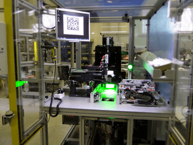
Technologia kodów kreskowych i kodów 2D
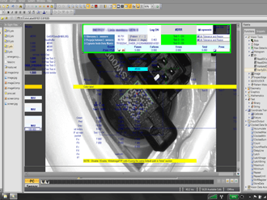
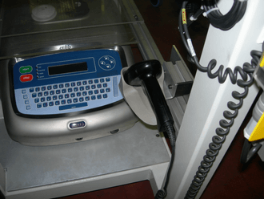
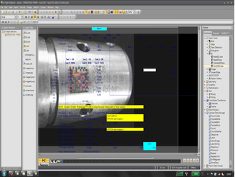
Technika zszywania tkanin
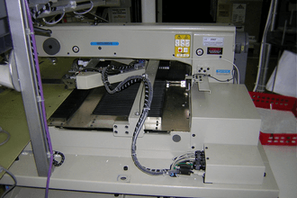
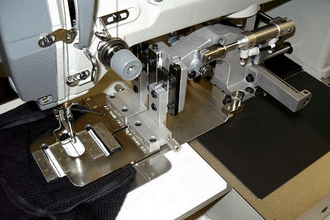
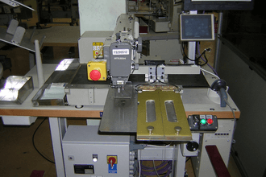
Pomiary wielkoœci Mechanicznych i Elektrycznych, kontrola szczelnoœci
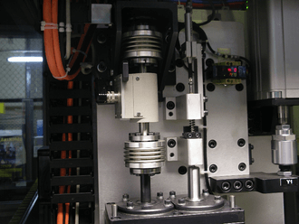
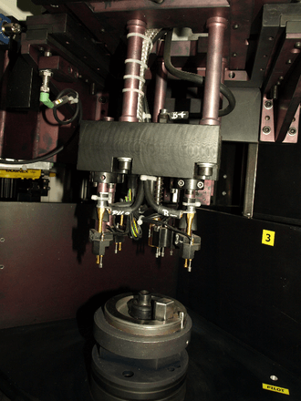
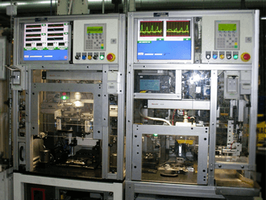
Wtryskarki, Technologia wtrysku
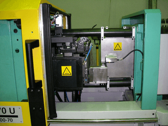
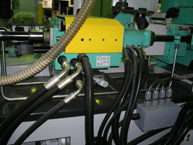
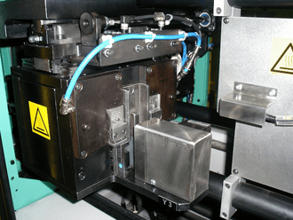